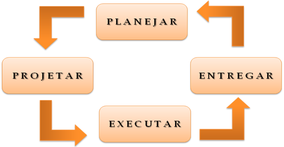

Home
Teste demonstra a presença de defeitos
Teste exaustivo é impossível
Teste antecipado
Agrupamento de defeitos
Paradoxo do Pesticida
Teste depende do contexto
A ilusão da ausência de erros
Paradoxo do Pesticida
O uso frequente do mesmo pesticida pode fazer com que certas pragas criem resistência as substâncias da fórmula, tornando cada vez mais difícil eliminá-las. O mesmo episódio pode ocorrer quando um conjunto de testes repetido diversas vezes passa a não encontrar novos defeitos após um determinado período. Por isso, deve ser revisado periodicamente o planejamento do projeto para que casos de teste não se tornem obsoletos perdendo sua eficácia.
Como evitar então que o paradoxo aconteça ?
Podemos seguir a padronização internacional de criação de casos de teste (IEEE 829) durante o ciclo de desenvolvimento e no final da execução dos testes, reavaliar os casos e o desgaste da suíte criada mantendo assim um padrão onde sempre verificamos e atualizamos os testes a serem realizados mesmo que a suíte de teste antiga passe sem problemas.
